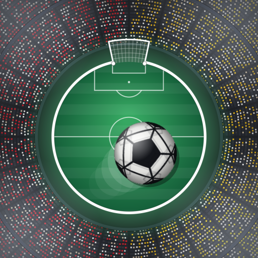

Skor Simülatörü
iOS · Android
Gizlilik Politikası
Son güncelleme: 22 Ekim 2026
Skor Simülatörü ("uygulama") kişisel verilerini toplamaz, saklamaz veya paylaşmaz.
- Hesap yok
- Uygulama üyelik, giriş, e-posta veya telefon numarası istemez.
- Analitik ve reklam yok
- Uygulamada izleme, analitik, reklam veya üçüncü taraf SDK'sı bulunmaz. Cihaz kimliği, konum veya kullanım verisi toplanmaz.
- Maç listesi
- Günün maçlarını göstermek için uygulama, maç programını herkese açık futbol veri servislerinden (ESPN ve TheSportsDB) çeker. Bu istekler kişisel bilgi içermez; ancak her internet isteğinde olduğu gibi, bu servisler isteğin geldiği IP adresini teknik olarak görebilir. Bu servislerin kendi gizlilik politikaları geçerlidir.
- Videolar
- Simülasyon videoları tamamen cihazında oluşturulur ve hiçbir sunucuya yüklenmez. "Galeriye kaydet" dediğinde video yalnızca senin fotoğraf galerine kaydedilir; bunun için uygulama yalnızca galeriye ekleme izni ister, mevcut fotoğraflarını okumaz. "Paylaş" dediğinde video, senin seçtiğin uygulamaya cihazının paylaşım menüsüyle gönderilir.
- Cihazda saklanan bilgiler
- Uygulama, maç listesini ve takım kadrolarını daha hızlı göstermek için geçici bir önbellek ve ses açık/kapalı tercihini cihazında saklar. Bunlar cihazından dışarı çıkmaz; uygulamayı silince silinir.
- Çocuklar
- Uygulama çocuklardan bilerek veri toplamaz; zaten hiç kimseden veri toplamaz.
- Simülasyon uyarısı
- Uygulamadaki skorlar rastgele üretilir, gerçek maç sonuçlarını veya tahminleri yansıtmaz. Uygulama hiçbir kulüp, lig veya federasyonla bağlantılı değildir.
- Değişiklikler
- Bu politika değişirse güncel hali bu sayfada yayınlanır ve yukarıdaki tarih güncellenir.
- İletişim
- mesutdemirtas1524@gmail.com
Privacy Policy
Last updated: October 22, 2026
Skor Simülatörü ("the app") does not collect, store or share personal data.
- No accounts
- No sign-up, login, email or phone number.
- No analytics or ads
- No tracking, analytics, advertising or third-party SDKs. No device identifiers, location or usage data are collected.
- Fixture list
- To show today's matches, the app fetches public fixture data from ESPN and TheSportsDB. These requests contain no personal information, though, as with any internet request, those services can technically see the requesting IP address. Their own privacy policies apply.
- Videos
- Simulation videos are created entirely on your device and are never uploaded. "Save to gallery" stores the video in your photo library using add-only permission; the app does not read your existing photos. "Share" hands the video to the app you choose via the system share sheet.
- On-device data
- A short-lived fixture and squad cache and your sound on/off preference are stored on your device only and are removed when you delete the app.
- Children
- The app does not knowingly collect data from children; it collects no data from anyone.
- Simulation notice
- Scores are randomly generated and do not reflect real results or predictions. The app is not affiliated with any club, league or federation.
- Changes
- If this policy changes, the new version is published on this page with an updated date.
- Contact
- mesutdemirtas1524@gmail.com